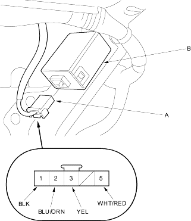

Keyless/Power Door Lock System
Keyless Receiver Unit Input Test
22-226
Remove the dashboard centre lower cover (see page
20-79
).
Remove the audio unit (see page
22-212
).
Disconnect the 5P connector (A) from the keyless receiver unit (B).

Wire side of female terminals
Inspect the connector and socket terminals to be sure they are all making good contact.
If the terminals are bent, loose or corroded, repair them as necessary and recheck the system.
If the terminals are OK, go to step 5.